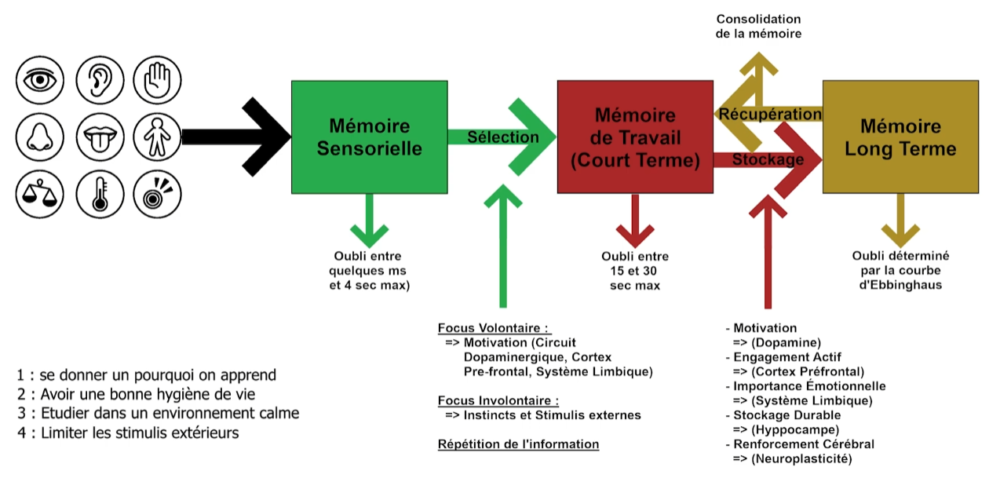
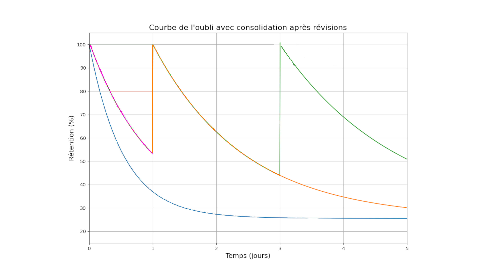
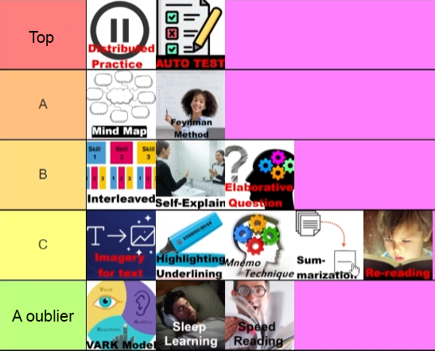
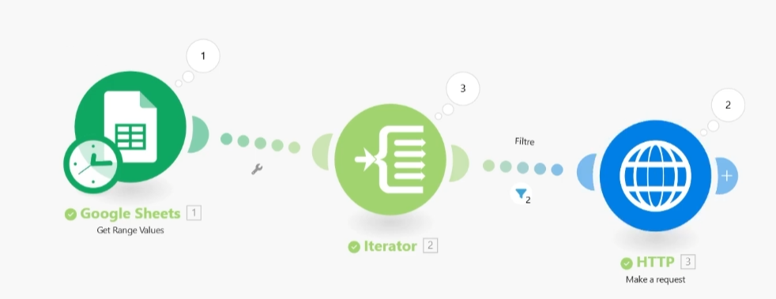
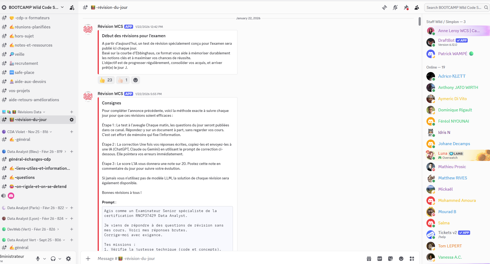
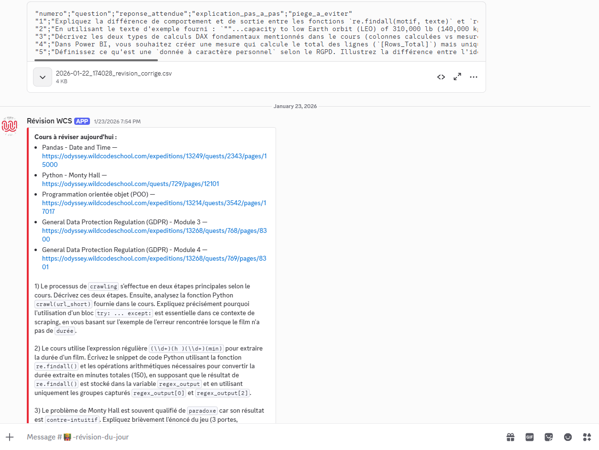

Apprendre avec la Science
Objectif : transformer une recherche personnelle sur la mémorisation efficace en un outil capable de planifier les révisions, récupérer les contenus du jour, et générer automatiquement un auto-test pertinent diffusé sur Discord.
Stack : Python, LLM (Llama via Groq), API REST, Prompt engineering, Web scraping
Genèse
L'apprentissage est un sujet central pour moi. J'ai donc décidé de me former sérieusement aux meilleures techniques de mémorisation et d'étudier la littérature scientifique sur le sujet. Cette recherche m'a poussé à comprendre concrètement ce qui se passe lorsqu'on apprend : sélection de l'information, mémoire de travail, stockage en mémoire long terme, récupération, consolidation et courbe d'Ebbinghaus.
En pratique, cela m'a amené à comparer les méthodes d'apprentissage les plus efficaces, à distinguer les faux bons conseils des approches vraiment solides, puis à concevoir un outil capable d'automatiser ce travail de révision. Le premier résultat a pris la forme d'un prototype no-code construit avec Make / Integromat.
La recherche scientifique derrière l'outil
Le point de départ est une méta-analyse synthétisant plus de 700 études scientifiques sur les techniques d'apprentissage. Plutôt que de partir de l'intuition ou des conseils habituels, j'ai voulu classer ces techniques par efficacité réelle pour ne garder que celles qui tiennent debout face à la donnée.
En parallèle, j'ai cartographié le fonctionnement réel de la mémoire :

La courbe d'Ebbinghaus donne la métrique clé : 58 % d'information retenue après 20 minutes, 34 % après 24h, autour de 21 à 25 % après une semaine si on ne fait rien. Bien réparties dans le temps, 7 révisions suffisent pour ancrer une information à vie : J+0 (20 min), J+1, J+3, J+7, J+14, J+30, J+90, J+180, puis un rappel tous les 2 ans.

Tier-list des techniques d'apprentissage
La méta-analyse permet de trancher entre les méthodes qui marchent vraiment et celles qui sont vendues mais inefficaces :
- Tier S (à mettre en place absolument) : auto-test (questions ouvertes, pas de QCM), répétition espacée (revoir une notion à J+1, J+3, J+7, J+14… plutôt qu'en une seule session), sessions courtes type Pomodoro (blocs de 20 minutes coupés par de courtes pauses).
- Tier A (bons compléments) : méthode Feynman (expliquer le cours comme à un enfant de 10 ans), mind maps, interleaved practice (alterner les matières), self-explain et elaborative questions (creuser le "pourquoi"). Ces deux dernières sont encore plus efficaces quand on les pratique en mode Feynman : se forcer à vulgariser pour quelqu'un d'autre fait remonter les vrais trous de compréhension, là où un monologue mental se contente souvent d'une illusion de maîtrise.
- Tier C (négligeable) : relecture passive, surlignage, résumé, imagerie-texte, mnémotechniques.
- À fuir : le modèle VARK (apprenant "visuel" vs "auditif" : aucune base scientifique), le speed reading et le sleep learning.

Premier prototype no-code avec Make
Une fois la tier-list posée, l'objectif du prototype était clair : automatiser les deux techniques Tier S qui demandent le plus de discipline dans le temps, à savoir l'auto-test et la répétition espacée. Le reste (Pomodoro, Feynman, mind maps…) reste à la main de l'apprenant.
J'ai voulu rendre tout ça utilisable au quotidien sans frottement. Première version, 100 % no-code, autour de trois briques :
- Google Sheets comme base de données : une ligne par cours (titre, lien, date d'étude), avec un calcul automatique des 7 dates de révision selon la courbe d'Ebbinghaus.
- Make (ex-Integromat) comme orchestrateur : un scénario déclenché chaque matin à 8h, qui lit la feuille Google Sheets et récupère les cours dont la date de révision tombe le jour même.
- Sortie multi-canal : un scénario envoie un message via webhook Discord (ping personnel, titres des cours en gras), un autre écrit dans un Google Doc épinglé pour ceux qui n'utilisent pas Discord.
La dernière brique était le générateur d'auto-tests : pour chaque cours à réviser, j'utilisais le GPT custom Video Summarizer sur ChatGPT, qui ingère l'URL d'une vidéo YouTube, en sort une synthèse puis génère des questions ouvertes (jamais de QCM, conformément à la méta-analyse). Le rappel quotidien tombe, je clique sur les liens du message, je passe l'auto-test en deux à dix minutes selon l'enjeu.
Cette première version expose déjà le coeur de la démarche : s'appuyer sur les meilleures pratiques issues de la recherche, utiliser la répétition espacée au bon moment, privilégier l'auto-test plutôt que la simple relecture, et supprimer au maximum la friction opérationnelle pour que réviser devienne quelque chose de faisable au quotidien.

Adaptation pour la Wild Code School
Pendant mon cursus Data Analyst à la Wild Code School, j'ai présenté cet outil aux responsables pédagogiques et je leur ai proposé une adaptation sur mesure pour la promotion. Ils m'ont fait confiance et m'ont laissé carte blanche pour le mettre en place : accès à leur serveur Discord pour la diffusion des tests, et autorisation explicite de scraper leur plateforme pédagogique Odyssey pour récupérer le contenu des cours.
Concrètement, le proto Make avait un défaut : il fallait encore aller cliquer manuellement sur chaque cours, le copier dans ChatGPT pour générer le test, et recommencer pour chaque cours du jour. Sur une journée chargée à quatre ou cinq cours à réviser, ce sont quinze minutes de friction qui suffisent à faire décrocher la majorité des étudiants. L'objectif de la V2 était simple : aller jusqu'au "0 clic", un seul test consolidé posé chaque matin dans Discord, prêt à être fait.


Pipeline automatisé
Sortie de Make / no-code, place à un vrai script Python que je peux planifier en cron (Linux/Mac) ou via le Planificateur de tâches Windows. Une exécution complète tourne en ~30 secondes. Stack complet :
- Excel
Revision_WCS.xlsx: planning des cours (nom, URL Odyssey, date) avec calcul automatique des dates de révision selon la courbe d'Ebbinghaus. - Playwright (Chromium headless) : connexion automatique à Odyssey (authentification via un fichier
.env), navigation vers chaque cours du jour, extraction du contenu (HTML, images, liens Google Drive / Colab) puis conversion en Markdown propre. - Groq + Llama 3.3 70B (API gratuite, ~14 000 requêtes par jour) : un seul test consolidé par jour, 15 à 20 minutes, environ 2-3 questions ouvertes par cours, mélangées pour favoriser la compréhension transversale, pilotées par un prompt système « professeur de Data Science ». Pas de QCM, pas de corrigé (conforme à la méta-analyse).
- Webhook Discord : envoi du test formaté en Markdown avec découpage automatique pour respecter la limite de 2 000 caractères par message, dans le salon dédié aux promos Data Analyst de septembre 2025.
Garde-fou : validation humaine avant diffusion
Si j'avais déployé les tests tels que le modèle les générait, j'aurais potentiellement fait apprendre des erreurs à des éléves. Sur ce projet j'ai donc pris la solution la plus honnête : une validation humaine avant déploiement. Lent, pas scalable, mais je dormais tranquille.
Concrètement, le pipeline décrit ci-dessus a deux destinations Discord successives : un serveur privé qui me sert de salle de relecture, puis, après validation manuelle de ma part, le serveur officiel de la Wild Code School. Si une question dérive (hors-sujet, ambiguë, factuellement fausse), je la corrige ou la relance avant qu'elle n'atteigne les étudiants.
J'ai poussé cette réflexion plus loin dans un article publié sur LinkedIn : quelques leviers concrets pour fiabiliser la sortie d'un LLM en production sans relire 10 000 outputs par jour (grounding strict, consensus N-shots, second modèle critic, QA échantillonnée à 2-5 %, flagging des questions où tout le monde se plante…). À lire directement : « Les projets LLMs sont-ils réellement fiables en entreprise ? ».
Le coeur technique du projet, c'est de fiabiliser le scraping face à une plateforme pédagogique qui n'expose pas d'API publique (gestion du login, des sessions, des redirections), et de contraindre le LLM à produire un format reproductible d'un jour à l'autre (questions ouvertes, pas de fuite de réponses, longueur maîtrisée).
Le projet est open source sous GPLv3 et disponible sur github.com/Plok-Code/R-visions-WCS. Tout est gratuit pour l'apprenant : Groq (free tier), Discord (webhooks illimités), Python (open source). Coup d'usage quotidien : ~0,007 % du quota Groq gratuit, soit infiniment scalable à l'échelle d'une promo.